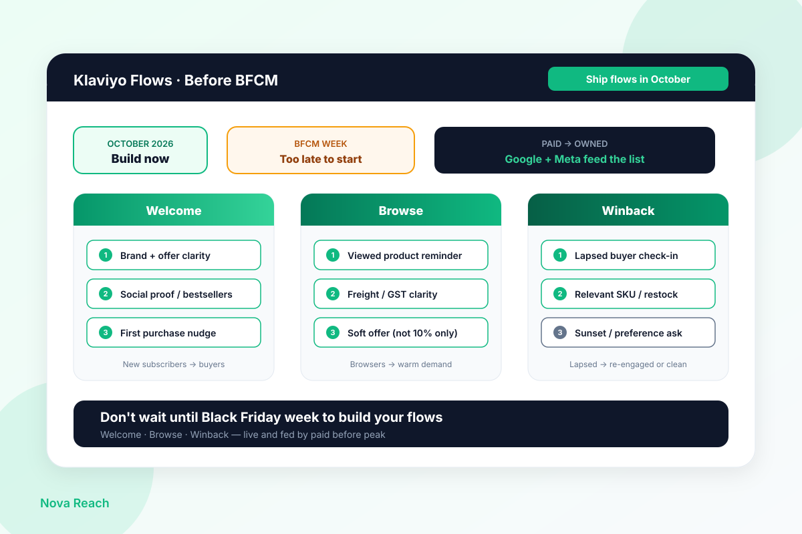
Build Your Klaviyo Flows in October, Not Black Friday Week
NZ/AU stores scramble to build BFCM email the week of the sale. October is when welcome, browse, and winback flows should already be live and fed by paid.
Read →
What's changing in SEO, paid search, CRO and email, and what NZ and AU stores should do about it. New posts most weeks.

NZ/AU stores scramble to build BFCM email the week of the sale. October is when welcome, browse, and winback flows should already be live and fed by paid.
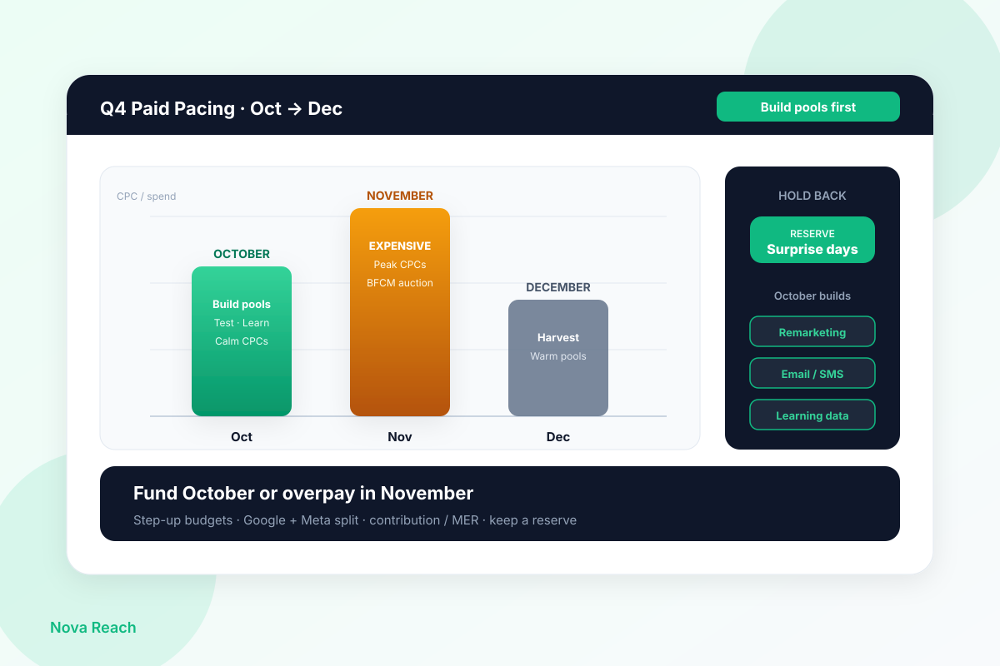
NZ/AU stores hoard paid budget for Black Friday week, then buy the most expensive clicks of the year. October is when you build retargeting pools and learning cheaply.
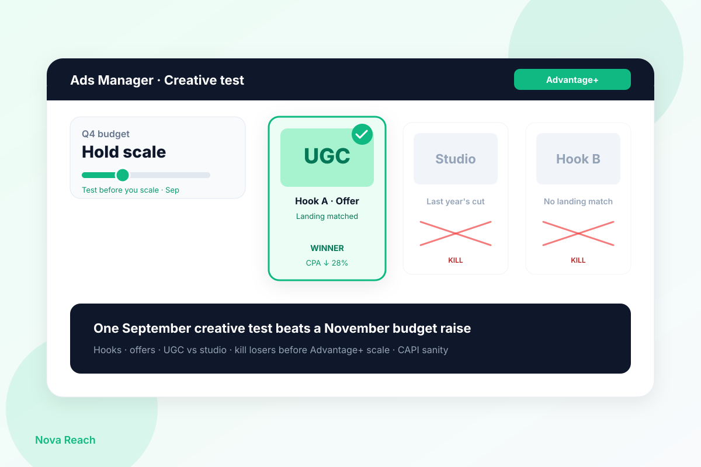
NZ/AU stores dump Q4 budget into Advantage+ with last year's creatives and wonder why CPA climbs. One September creative test beats a November budget raise.
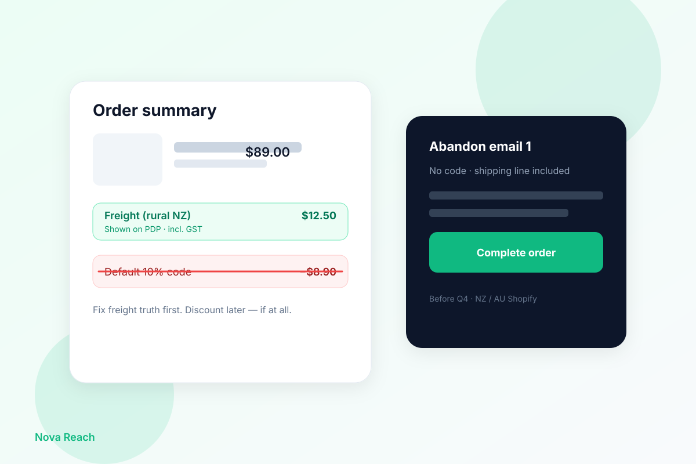
NZ and AU Shopify stores lose abandon-cart recoveries on freight and GST surprises, then throw 10% codes at the problem. What to fix in September before Black Friday…
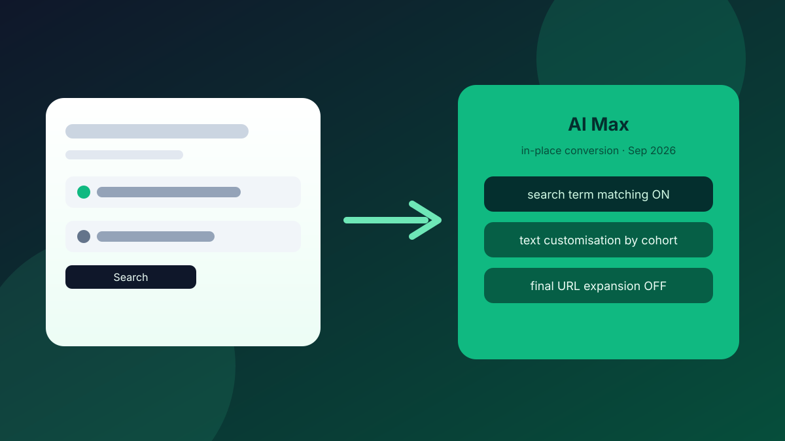
Between 1 and 30 September 2026, Google is converting eligible Search campaigns to AI Max in place. Broad-match and legacy ACA cohorts get different defaults. Here's…
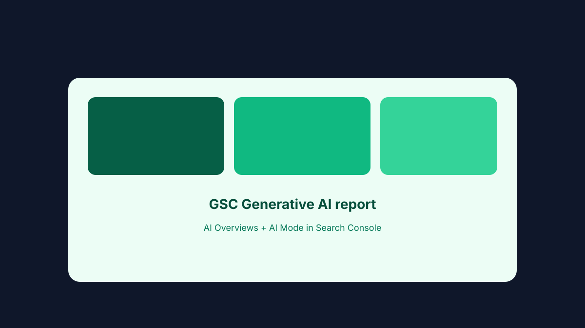
Google's new Generative AI performance report finally puts AI Overviews and AI Mode data in Search Console. Here's what it shows, what it leaves out, and how to use it…
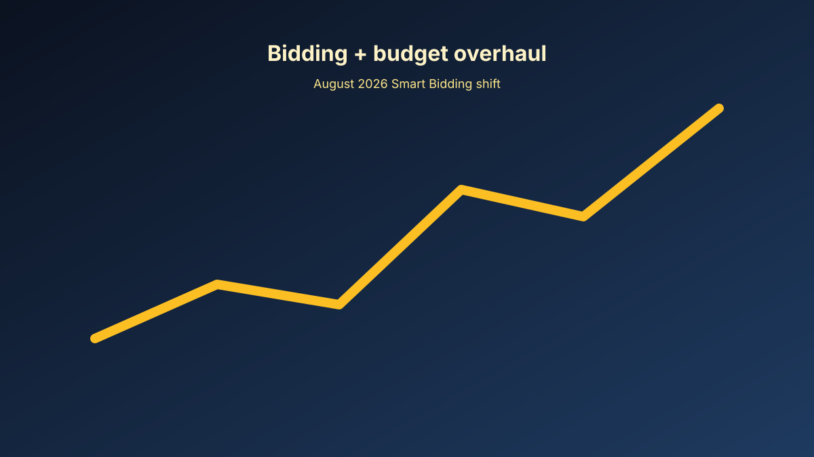
Google's June 2026 Smart Bidding overhaul changes how budget-limited campaigns hit their targets from August 17. Here's what Promotion Mode, Smart Bidding Exploration…
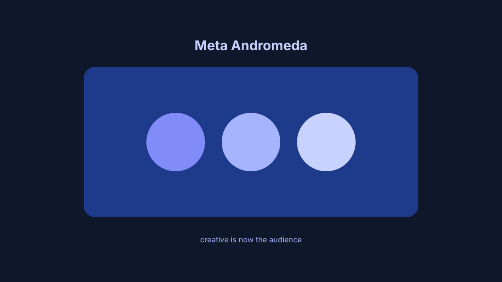
Meta's Andromeda delivery system reads your ad creative as the primary audience signal. Manual interest targeting is losing power. Here's what practitioners need to do…
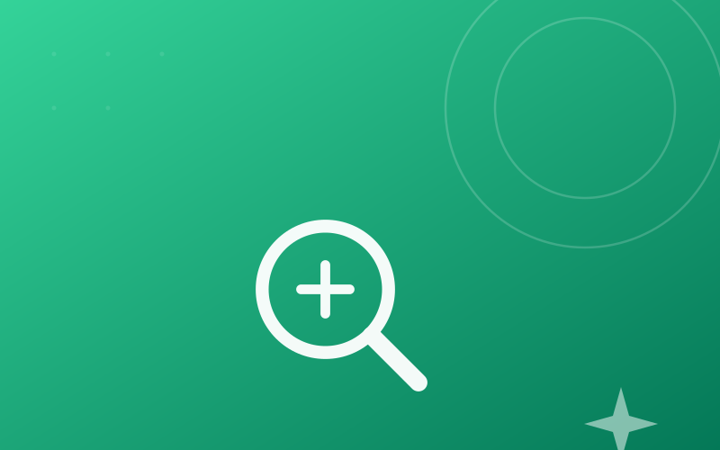
Google's May 2026 core update is live and targeting AI-mass-produced content. Here's what the update actually targets, how to diagnose impact on your clients, and the…
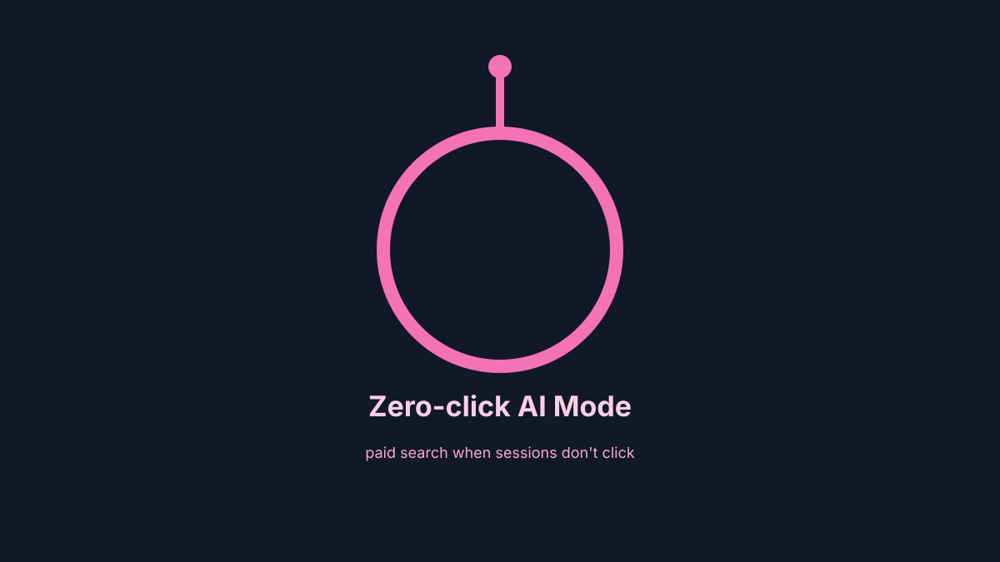
Google AI Mode now has 75M daily users and ads in 25% of results, but 93% of sessions end without a click. Here's what paid search advertisers should do now.
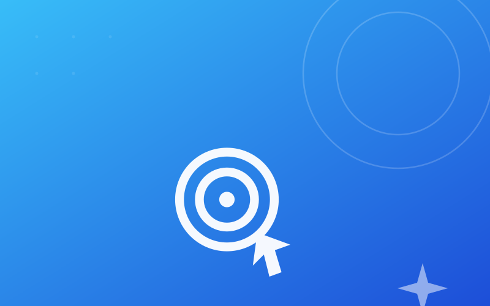
Google has confirmed DSAs will auto-upgrade to AI Max from September 2026. Here's what changes, what you need to do now, and how to prepare your campaigns.
Google has added audience exclusions, network segmentation and budget reports to Performance Max. Here’s what changed in April 2026 and what to do now.
Google's first core update of 2026 is live and targeting AI-scaled content. Here's what changed, who's at risk, and exactly how to respond.
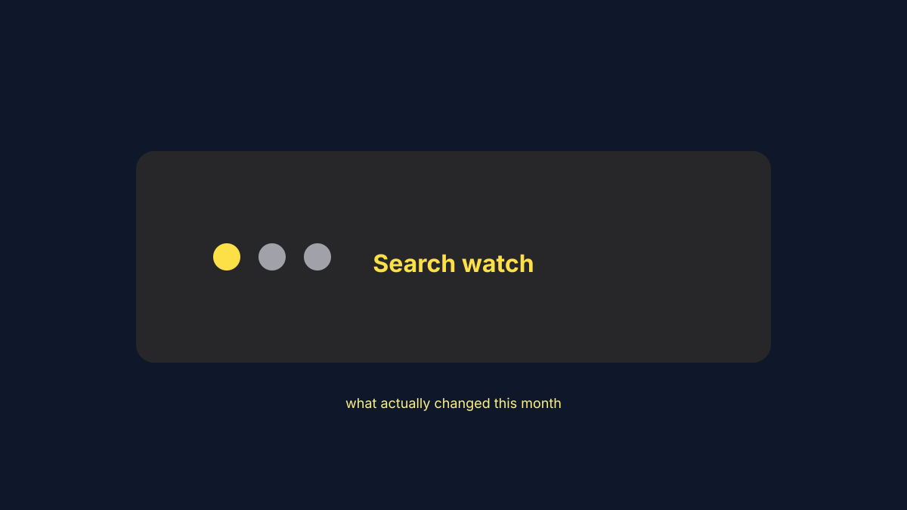
A core update shook up rankings this month. What changed, and how to react without wrecking your content plan or your ad budget.
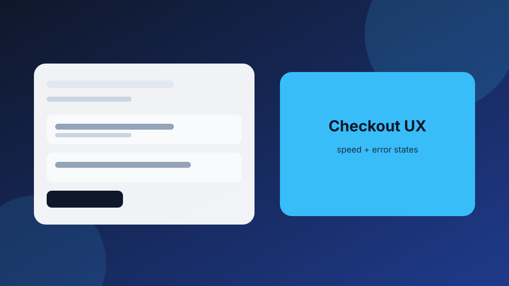
Move friction out of the way at the exact moment it shows up, and load only what's needed. That's how you get conversion lift without a redesign.
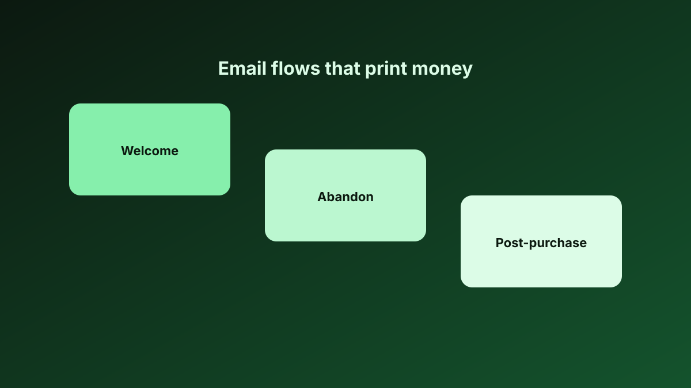
You don't need dozens of automations. Three short, useful flows (welcome, abandon and post-purchase) will pay for themselves.
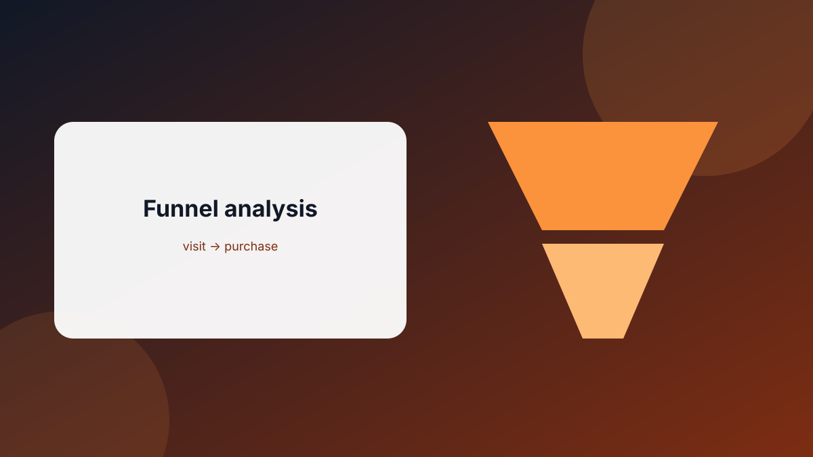
Learn how to analyze your e-commerce funnel to identify drop-off points and increase conversions. Master the customer journey from visit to purchase.
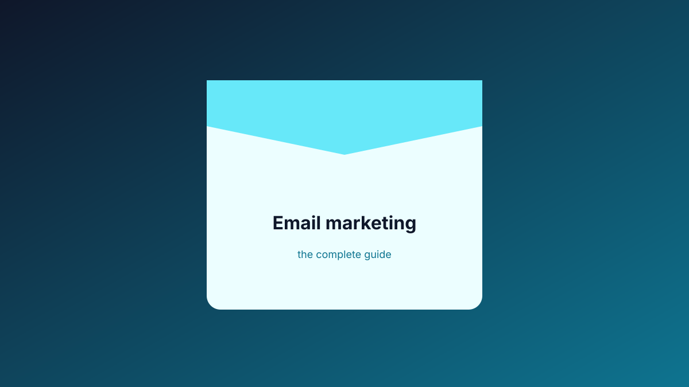
What email marketing is, how it works, whether it converts, and how to get better at it without annoying your list.
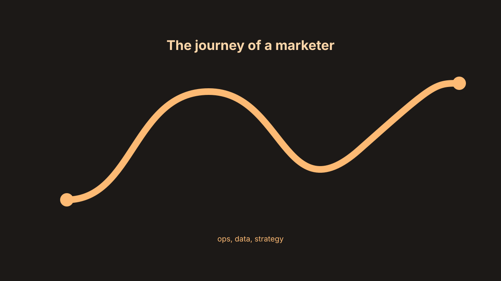
How I got into marketing, what the job at Bargain Chemist actually involves day to day, and what I've learned so far.